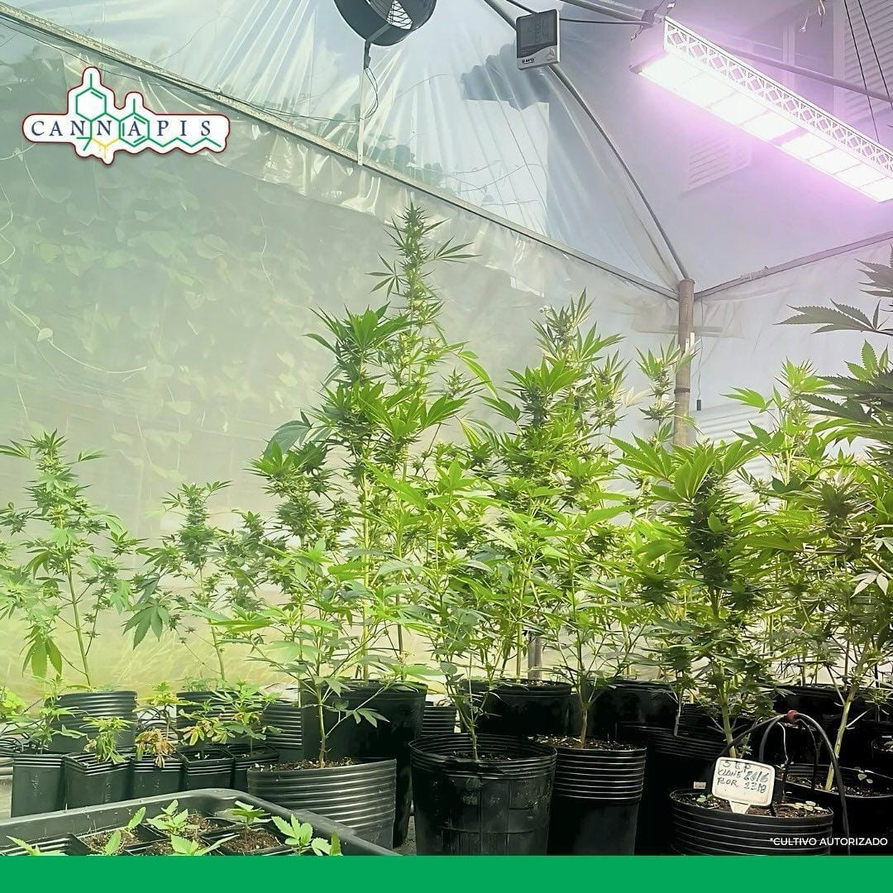
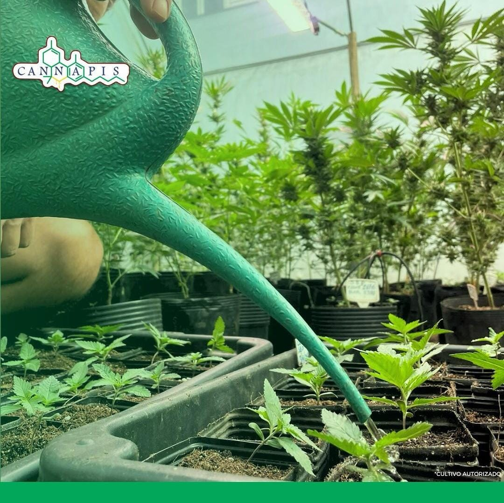
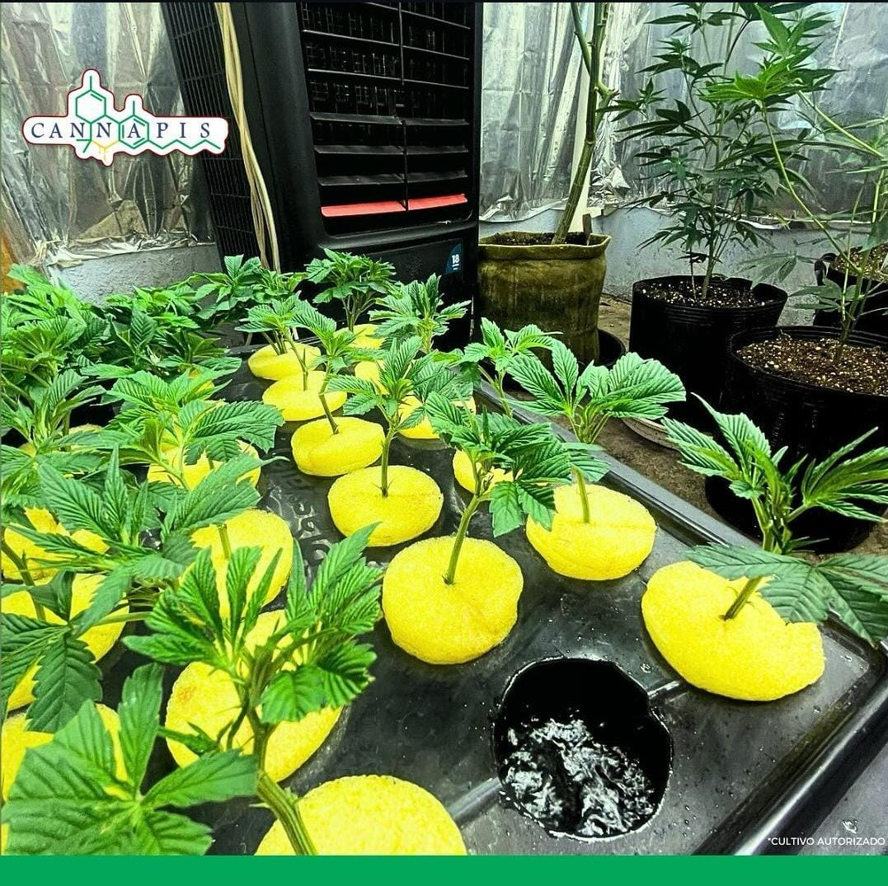
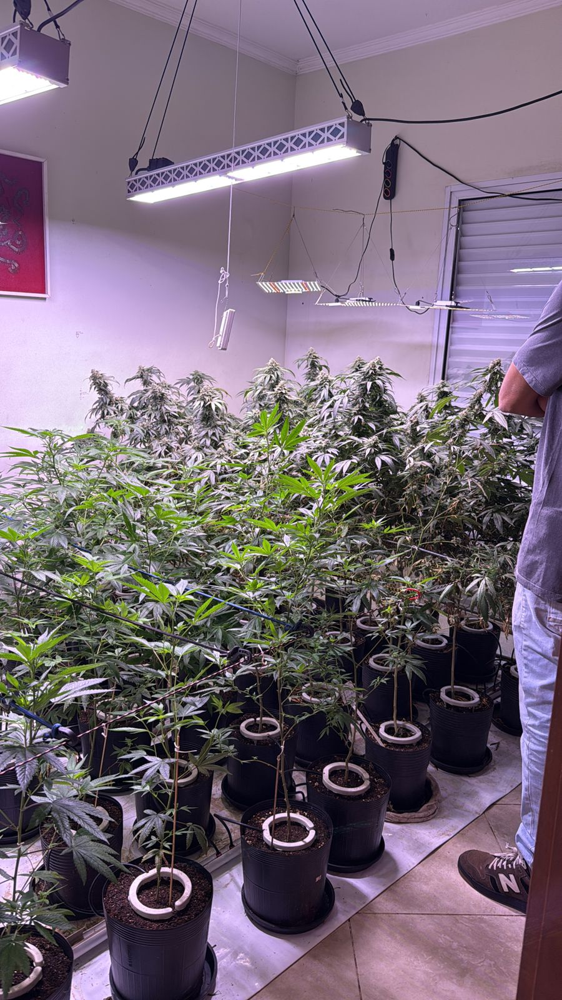
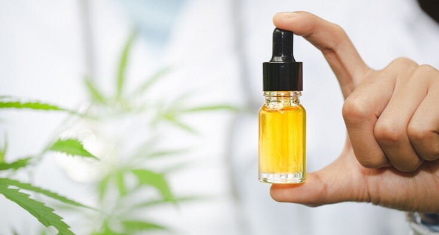
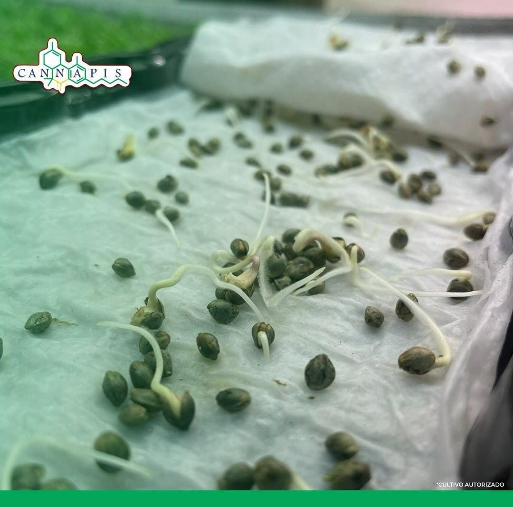

Tratamentos humanizados, seguros e personalizados com cannabis medicinal para melhorar a qualidade de vida e o bem-estar de nossos pacientes.
Conheça Nossa Estrutura
Ambiente rigorosamente monitorado para o desenvolvimento ideal das plantas medicinais (*Cultivo Autorizado*).

Cuidados diários dedicados desde a germinação até a colheita com total controle de qualidade.

Seleção genética especializada para garantir eficácia terapêutica padronizada nos extratos.

Iluminação de alta tecnologia e controle climático avançado para máxima pureza e rendimento fitoterápico.

Produtos finais desenvolvidos com rigor científico para garantir o tratamento adequado aos pacientes associados.

Início do ciclo produtivo sob estritos padrões de segurança, higiene e conformidade legal.